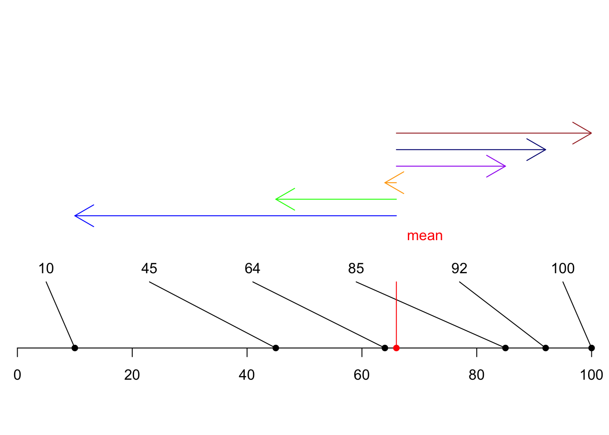

Standard Deviations Simulation
What is Standard Deviation?
## define plot data
xlim <- c(0,100);
ylim <- c(0,100);
#px <- c(5,5,50,60,70,90);
px=sort(round(runif(6,0,100),0))
py <- c(0,0,0,0,0,0);
lx.buf <- 5;
lx <- seq(xlim[1]+lx.buf,xlim[2]-lx.buf,len=length(px));
ly <- 20;
## create basic plot outline
par(xaxs='i',yaxs='i',mar=c(5,1,1,1));
plot(NA,xlim=xlim,ylim=ylim,axes=F,ann=F);
axis(1);
## plot elements
segments(px,py,lx,ly);
points(px,py,pch=16,xpd=NA);
text(lx,ly,px,pos=3);
## Add the mean
points(x = mean(px),y = 0,pch=16 ,xpd=NA,col="red")
segments(mean(px),0,mean(px),20,col="red");
text(mean(px)+5,30,"mean",pos=3,col="red");
##Deviations from mean
arrows(x0 = mean(px),y0 = 40,x1 = px[1],y1 = 40,col="blue")
arrows(x0 = mean(px),y0 = 45,x1 = px[2],y1 = 45,col="green")
arrows(x1 = px[3],y0 = 50,x0 = mean(px),y1 = 50,col="orange")
arrows(x1 = px[4],y0 = 55,x0 = mean(px),y1 = 55,col="purple")
arrows(x1 = px[5],y0 = 60,x0 = mean(px),y1 = 60,col="navy")
arrows(x1 = px[6],y0 = 65,x0 = mean(px),y1 = 65,col="brown")
## Squared deviations
dev.off()## null device
## 1xlim <- c(0,1500);
ylim <- c(0,1500);
plot(NA,xlim=xlim,ylim=ylim,axes=F,main = "squared devations");
axis(1);
arrows(x0 = 0,y0 = 0,x1 = (px[1]-mean(px))^2, y1 = 0,col="blue")
arrows(x0 = 0,y0 = 100,x1 = (px[2]-mean(px))^2, y1 = 100,col="green")
arrows(x0 = 0,y0 = 200,x1 = (px[3]-mean(px))^2, y1 = 200,col="orange")
arrows(x0 = 0,y0 = 300,x1 = (px[4]-mean(px))^2, y1 = 300,col="purple")
arrows(x0 = 0,y0 =400,x1 = (px[5]-mean(px))^2, y1 = 400,col="navy")
arrows(x0 = 0,y0 = 500,x1 = (px[6]-mean(px))^2, y1 = 500,col="brown")
##add the average squared deviation
arrows(x0 = 0,y0 = 1000,x1 = ((px[1]-mean(px))^2+(px[2]-mean(px))^2+(px[3]-mean(px))^2+(px[4]-mean(px))^2+(px[5]-mean(px))^2+(px[6]-mean(px))^2)/6, y1 = 1000,col="red")
##Back to dieavtions
dev.off()## null device
## 1xlim <- c(0,100);
ylim <- c(0,100);
par(xaxs='i',yaxs='i',mar=c(5,1,1,1));
plot(NA,xlim=xlim,ylim=ylim,axes=F,ann=F);
axis(1);
## plot elements
segments(px,py,lx,ly);
points(px,py,pch=16,xpd=NA);
text(lx,ly,px,pos=3);
## Add the mean
points(x = mean(px),y = 0,pch=16 ,xpd=NA,col="red")
segments(mean(px),0,mean(px),20,col="red");
text(mean(px)+5,30,"mean",pos=3,col="red");
##Deviations from mean
arrows(x0 = mean(px),y0 = 40,x1 = px[1],y1 = 40,col="blue")
arrows(x0 = mean(px),y0 = 45,x1 = px[2],y1 = 45,col="green")
arrows(x1 = px[3],y0 = 50,x0 = mean(px),y1 = 50,col="orange")
arrows(x1 = px[4],y0 = 55,x0 = mean(px),y1 = 55,col="purple")
arrows(x1 = px[5],y0 = 60,x0 = mean(px),y1 = 60,col="navy")
arrows(x1 = px[6],y0 = 65,x0 = mean(px),y1 = 65,col="brown")
arrows(x1 = (((px[1]-mean(px))^2+(px[2]-mean(px))^2+(px[3]-mean(px))^2+(px[4]-mean(px))^2+(px[5]-mean(px))^2+(px[6]-mean(px))^2)/6)^.5,y0 = 90,x0 = mean(px),y1 = 90,col="red")